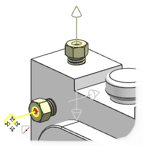
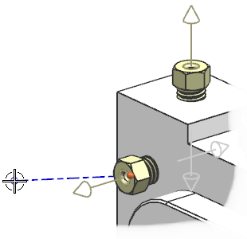
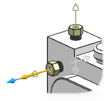

开始创建第一条管线段
-
点击机械管线布置工具条上创建线性路径
 。
。 -
确保模式是设置为指定点，然后选择安装在白色盒子左上角上扩口螺母的端口。

注意到管线段的另一端随着您的光标自由移动。

但是您需要这条管线段沿着端口的方向笔直延伸。
-
在模式列表中选择平行于轴。

现在管线段将平行于端口进行延伸。
-
在部件 BRAKE5WAY_MM 上，选择右下角扩口螺母上的端口。

将把路径段修剪至 BRAKE5WAY_MM 上的端口，并且轴方向变为平行于该管线端口。

但是，您的下一条管线段必须从第一条管线段的终点向下延伸。